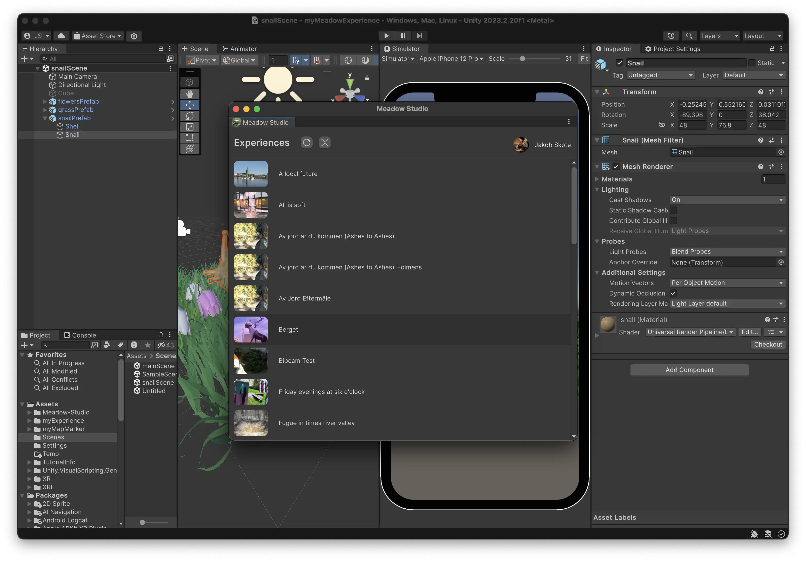

Use Meadow in an Existing Project
It is easy to use Meadow in an existing Unity project, you just need to install Meadow Studio and import the required packages.
Important: Meadow currently does not support custom C# scripts. This means that any custom C# scripts will need to be converted into Visual Scripting graphs.
Download Meadow Studio
- Go to: Download Meadow Studio (https://app.meadow.space/dashboard/meadow-studio).
- Click Download (the large white button in the bottom of the page). Once downloaded, drag and drop the package into your project window.
- You should now see the Meadow tab in the Unity editor.
